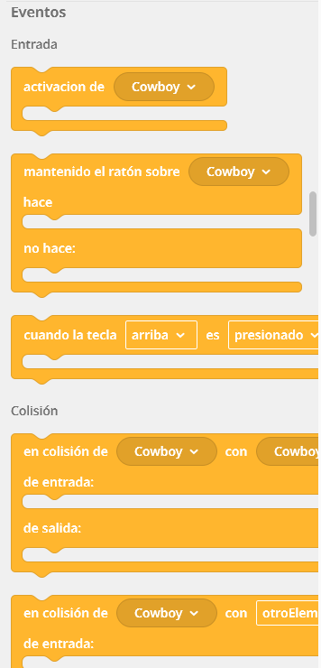

Los bloques de la categoría Eventos te permiten hacer que tu mundo virtual responda a las acciones del usuario (hacer clic, mover el ratón o pulsar teclas) o a lo que ocurre en el propio entorno (como el choque entre dos elementos). Son bloques con forma de "boca" o contenedor, lo que significa que debes meter los bloques azules (movimiento) o morados (acciones) dentro de ellos.
